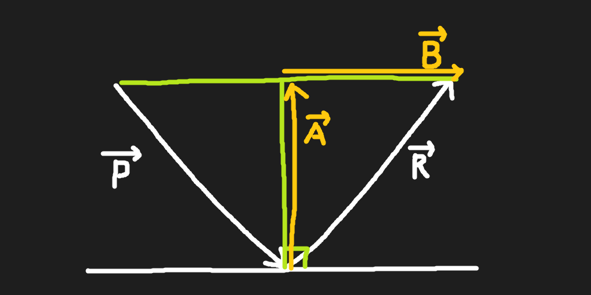

주어진 성분이 다음과 같을 때
P 입사벡터
R 반사벡터
n 평면의 법선벡터
T 입사각

반사벡터 R은 다음과 같다
R = A + B
||A|| = ||-P|| * cosT
= ||-P|| * ||n|| * cosT
= -P ⋅ n
A = ||A|| * n
= (-P ⋅ n) * n
B = P + A
= P + (-P ⋅ n) * n
R = A + B 에서
R = (-P ⋅ n) * n + P + (-P ⋅ n) * n
= P + 2 * ((-P ⋅ n) * n)